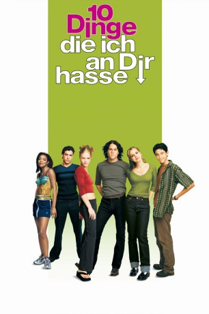
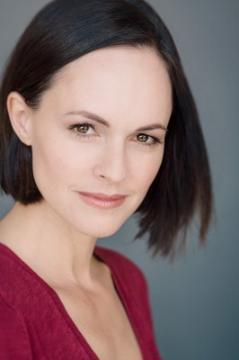

#2395 10 Dinge, die ich an Dir hasse
Alternativ: 10 Things I Hate About You
 
 IMDB-Wertung: 7.3 / 10
IMDB-Wertung: 7.3 / 10  Metascore: 70
Metascore: 70 
Die beiden Schwestern Bianca und Kat sind so unterschiedlich, wie man es nur selten kennt. Während Bianca als der Schwarm der gesamten Schule gilt, ist die ruppige Kat bekannt für ihre Kratzbürstigkeit, mit der sie sämtliche Jungs verschreckt. Richtig kompliziert wird die Sache allerdings erst durch eine Abmachung, die die beiden Mädchen mit ihrem Vater haben: Erst wenn Kat ein Date hat, darf auch Bianca mit einem Jungen ausgehen. Und so stehen Biancas Chancen, endlich mit dem süßen Joey einen Abend zu verbringen, ziemlich schlecht. Doch da hat der pfiffige Cameron, der schon lange für Bianca schwärmt, eine geniale Idee: Wenn sich wirklich kein Date für Kat finden läßt, dann muß man eben eines kaufen …
Jahr: 1999
Dauer: 97 Minuten
FSK: 12
Land: USA Studio: Buena Vista PicturesTonspuren: DTS - ,
Untertitel: Englisch,
Auflösung: 1080p (1920x1040) Größe: 11571 MB
Genre: Drama, Komödie, Liebe
Regisseur: Gil Junger
Drehbuch: Karen McCullah, Kirsten Smith, William Shakespeare
Soundtrack: Richard Gibbs
Darsteller:
 Heath Ledger als Patrick Verona
Heath Ledger als Patrick Verona Julia Stiles als Kat Stratford
Julia Stiles als Kat Stratford Joseph Gordon-Levitt als Cameron James
Joseph Gordon-Levitt als Cameron James- Larisa Oleynik als Bianca Stratford
 David Krumholtz als Michael
David Krumholtz als Michael- Andrew Keegan als Joey Donner
-  Susan May Pratt als Mandella
 Gabrielle Union als Chastity
Gabrielle Union als Chastity Larry Miller als Walter Stratford
Larry Miller als Walter Stratford- Daryl Mitchell als Mr. Morgan
 Allison Janney als Ms. Perky
Allison Janney als Ms. Perky- David Leisure als Mr. Chapin
- Kyle Cease als Bogie Lowenstien
- Eric Riedmann als Audio Visual Guy
- Quinn Maixner als Beautiful Jock
- Todd Butler als Coffee Kid #2
- Bianca Kajlich als Coffee Girl
- Aidan Kennedy als Laughing Loser
- Jelani Quinn als Crying Loser
- Aaron Therol als Detention Student
- Carlos Lacamara als Bartender
- Shelsie Blake als Bookstore Patron , uncredited
- Gil Junger als Teacher , uncredited
- Daniel Kountz als Admirer #1 , uncredited
- Katy Magnuson als Beautiful Girl , uncredited
- Amber Matthews als Club Dancer #1 , uncredited
- Maher McClung als Frisbee Thrower , uncredited
- Bridget O'Neill als Beautiful Girl , uncredited
- Tommy Snider als Student , uncredited
- Greg Jackson als Scruvy
- Terence Heuston als Derek
- Cameron Fraser als Trevor
- Demegio Kimbrough als Coffee Kid #1
- Dennis Mosley als Cohort
- Nick Vukelic als Drugged Out Loser
- Ben Laurance als Wimpy Loser
- Jesse Dyer als Screaming Loser
- Joshua Thorpe als Jock
- J.R. Johnson als Mba Guy at Party
- Wendy Gottlieb als Heather
- Brian Hood als Clem
- Travis Muller als Cowboy
- Ari Karczag als Kissing Guy
- Laura Kenny als Judith
- Alice Evans als Perky Girl
- Jesper Inglis als Buckaroo Bartender
- Nick Brown als Biker
- Monique Powell als Save Ferris Singer
- Brian Mashburn als Save Ferris Singer
- Kay Hanley als Letters To Cleo Singer
Datei: X:\1999\10 Dinge, die ich an Dir hasse (1999, FSK12, 1920x1040).mkv seit 04.11.2015
Festplatte: HD 1996-2002
 Es gibt insgesamt 81 Filme in der Gruppe '1999'
Es gibt insgesamt 81 Filme in der Gruppe '1999'